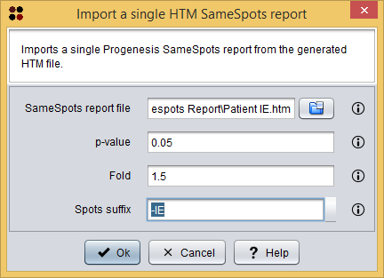

This operation allows you to import a single Progenesis SameSpots report from the generated HTM file.
SameSpots report format
This option allows you to import data from a single Progenesis SameSpots report (i.e. one HTM file). This report is generated by the Export report option of this software. For further details on this format, please, check the sample data provided with the tutorial that can be found at the official webpage.
Usage
You can execute this operation by clicking the menu option Import/SameSpots/Single HTM report.
A dialog will appear allowing you to choose the HTM report file and other parameters to filter the spots to be loaded. As you can see in the following image, this dialog requires you to provide the following information:

Import SameSpots single report dialog
After clicking the Ok button, the imported spots data is added as a SameSpots analysis datatype to the clipboard and automatically opened in the SameSpots analysis editor.